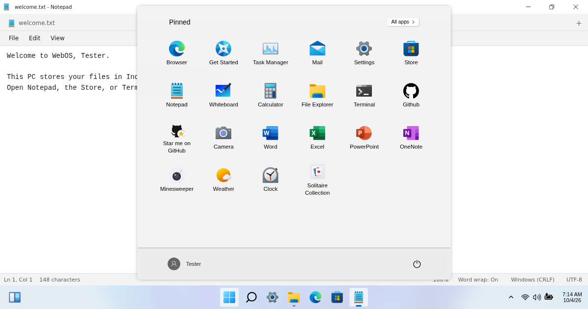

Win11 WebOS
by Bittu.
Windows 11 WebOS by bittuhere (Bittu) recreates a Windows 11-style desktop in your web browser. It is a web application built with React, Redux, JavaScript and SCSS—not Windows itself and not a remote Windows PC.

What can you do?
- A real desktop feel Start menu, taskbar, draggable windows and desktop shortcuts.
- Create and save files File Explorer, Notepad, Paint and the bundled Office tools—all stored locally.
- Games and BitBot Play bundled games and chat with the offline BitBot assistant.
- Make it yours Personalize the desktop and manage releases through Windows Update.
Offline and private by design
The first download saves bundled apps, images, fonts and BitBot resources for offline use. Your local profile, settings and files are stored in this browser. There is no Firebase sign-in. Browser data can be cleared or evicted; export important files. Local login is a simulation, not disk encryption or a security boundary against someone controlling the browser.
Live weather, maps, news, external browsing and remote Store apps need internet and contact their respective providers.
Who made it?
The project is maintained by bittuhere, also known as Bittu. The public GitHub repository contains its source, contribution information and attribution. See LICENSE and NOTICE for licensing and third-party credits.
How do I learn more?
Read the documentation and v1.02 release notes. This independent project is not affiliated with Microsoft, Windows 365 or Microsoft Windows.